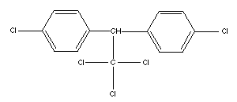
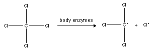

Toxicology Problem Set
Problem 4: How chemicals are processed in the body
For help to answer the question:
When DDT, a pesticide, enters the human body, it is _________________
A. water soluble and is easily excreted in urine. B. stored in the bones. C. not toxic, but is processed by enzymes and becomes a different compound which is toxic. D. fat soluble and can be stored in fat tissue.
Tutorial
|
After a chemical enters the body, it is carried by the blood to different locations. What happens next depends on the size, shape and solubility of the chemical. Solubility means whether it can dissolve in water or lipids. Lipids are a type of fat. For example, butter is not water soluble - if you mix butter and water, the butter floats on top of the water because it cannot mix in. DDT is not very soluble in water, so it gets stored in fats and can remain in the body for a very long time.
 Chemicals which are very water soluble are quickly eliminated from the body in the urine. Salts are an example of water soluble chemicals. (When you stir salt into a class of water, it immediately dissolves.) Extremely high doses of table salt can be toxic, but small doses are not and are easily removed from the body in the urine. Certain chemicals are processed by the body's enzymes into different, less harmful or more rapidly removed chemicals. This process is called biotransformation. For example, without biotransformation, ethanol (the alcohol in alcoholic beverages) takes four weeks to be removed from the body. With biotransformation, ethanol is changed into a more water soluble form and is removed within days or hours. Sometimes a non-toxic chemical is processed by the body's enzymes into a toxic chemical. This is called bioactivation. For example, carbon tetrachloride is a chemical that used to be used for cleaning. When it enters the body, it is non-toxic, but it is quickly processed into a toxic chemical called trichloromethyl radical.
 |


The Biology Project
The University of Arizona
Tuesday, September 16, 1997
Contact the Development Team
http://biology.arizona.edu
All contents copyright © 1997. All rights reserved.